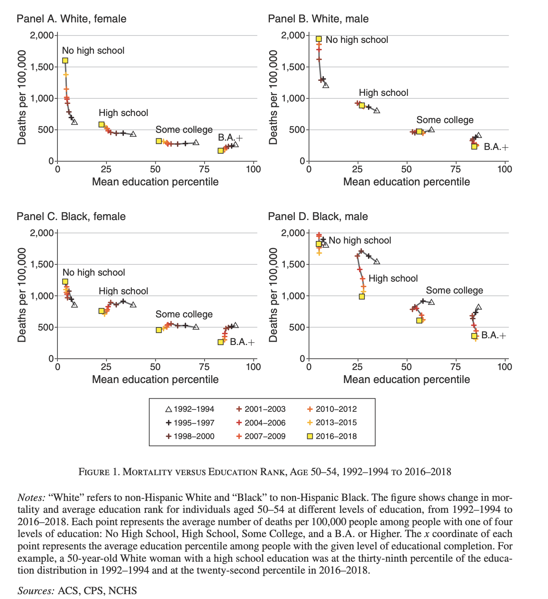
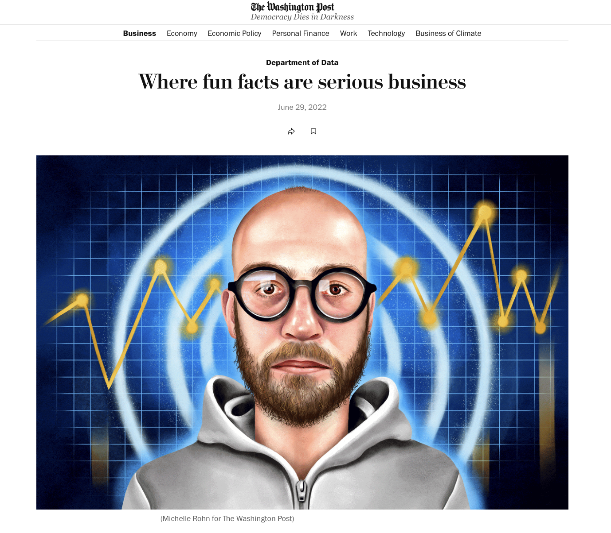
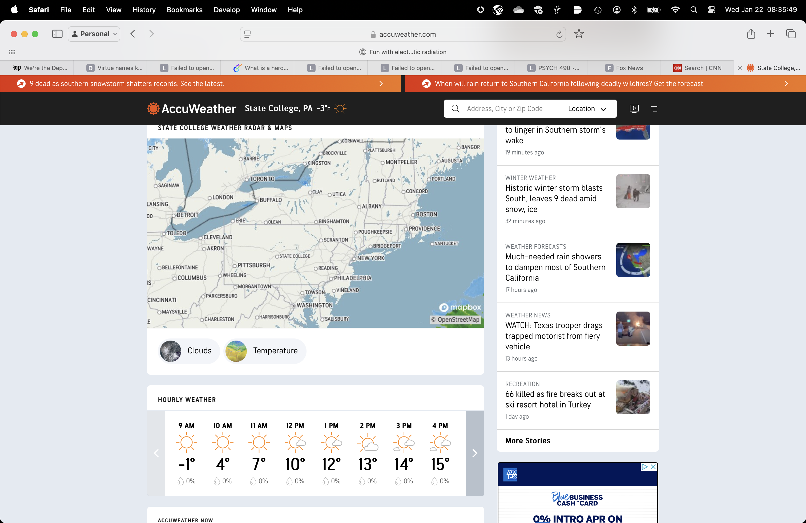

Data viz in art, sports, & journalism
2025-01-23
Rick Gilmore
Prelude
smalin (2011)
Stiles et al. (2025)
Mortality trends by education level
Novosad, Rafkin, & Asher (2022)
Novosad et al. (2022)
Overview
Announcements
- Exercise 01 due
- Tutorial on capturing images
Last time…
Visualization in government and business
What did we uncover?
- Summary report
Today
Visualization in art, sports, & journalism
Goals
- What sort(s) of visualizations are common in these fields?
- Apply principles of semiotics to these visualizations.
- Semantics: Mappings between signs and what they signify?
- Syntax: Rules for arrangement/organization
Data visualization in the arts
Musical notation

https://www.britannica.com/art/musical-notation
Antecdents

https://www.britannica.com/art/musical-notation/Evolution-of-Western-staff-notation

Wikipedia contributors (2025b)
Hebrew trope

Wikipedia contributors (2025a)
Styles
What is being mapped?
- Pitch
- Timing, tempo
- Loudness
- Stylistic properties
- etc.
smalin (2011)
Dance
Flores (2021)
Visual arts

“Blue Skies and Cloud Cover” by Laura Guertin, BTAA Data Viz 2024 Champion
Data visualization in sports
Examples
Data visualization in journalism
Paris (2025)
Paris (2025)
Data journalism
https://www.foxnews.com/search-results/search ‘data’
https://www.cnn.com/search?q=data
The Washington Post
Van Dam (2022)
Fowers & Van Dam (2024)
Accuweather.com
https://www.accuweather.com/en/us/state-college/16801/weather-forecast/335315?current=true
Knowable Magazine

https://knowablemagazine.org/
- Graphics library
Data viz outside \(\Psi\)
- Non-science fields visualize data, too
- Multiple purposes/uses of data viz
Next time
Making (sense of) data
Resources
References
Flores, M. S. (2021). Graph dance 2021 (STEM ingenuity grp 2). Youtube. Retrieved from https://www.youtube.com/watch?v=VQYuNKvbPDg
Fowers, A., & Van Dam, A. (2024, December 13). Unraveling america’s great puritan-name resurgence. The Washington Post. The Washington Post. Retrieved from https://www.washingtonpost.com/business/2024/12/13/virtue-names-hope-faith-charity/
Novosad, P., Rafkin, C., & Asher, S. (2022). Mortality change among less educated americans. American Economic Journal. Applied Economics, 14, 1–34. https://doi.org/10.1257/app.20190297
Paris, F. (2025, January 13). Childhood vaccination rates were falling even before the rise of R.F.K. jr. The New York Times. The New York Times. Retrieved from https://www.nytimes.com/interactive/2025/01/13/upshot/vaccination-rates.html
smalin. (2011). Beethoven, symphony 9, 4th movement (complete) ode to joy, presto, philharmonia baroque. Youtube. Retrieved from https://www.youtube.com/watch?v=ljGMhDSSGFU
Stiles, M., O’Key, S., Manley, B., Robinson, L., Merrill, C., Choi, A., … Rigdon, R. (2025, January 8). Visualizing the los angeles wildfires in maps and charts. Retrieved January 12, 2025, from https://www.cnn.com/2025/01/08/us/maps-visuals-los-angeles-wildfires-dg/index.html
Van Dam, A. (2022, June 29). Where fun facts are serious business. The Washington Post. The Washington Post. Retrieved from https://www.washingtonpost.com/business/2022/06/29/dept-of-data/
Wikipedia contributors. (2025a, January 5). Hebrew cantillation. Retrieved from https://en.wikipedia.org/wiki/Hebrew_cantillation
Wikipedia contributors. (2025b, January 12). Musical notation. Retrieved from https://en.wikipedia.org/wiki/Musical_notation